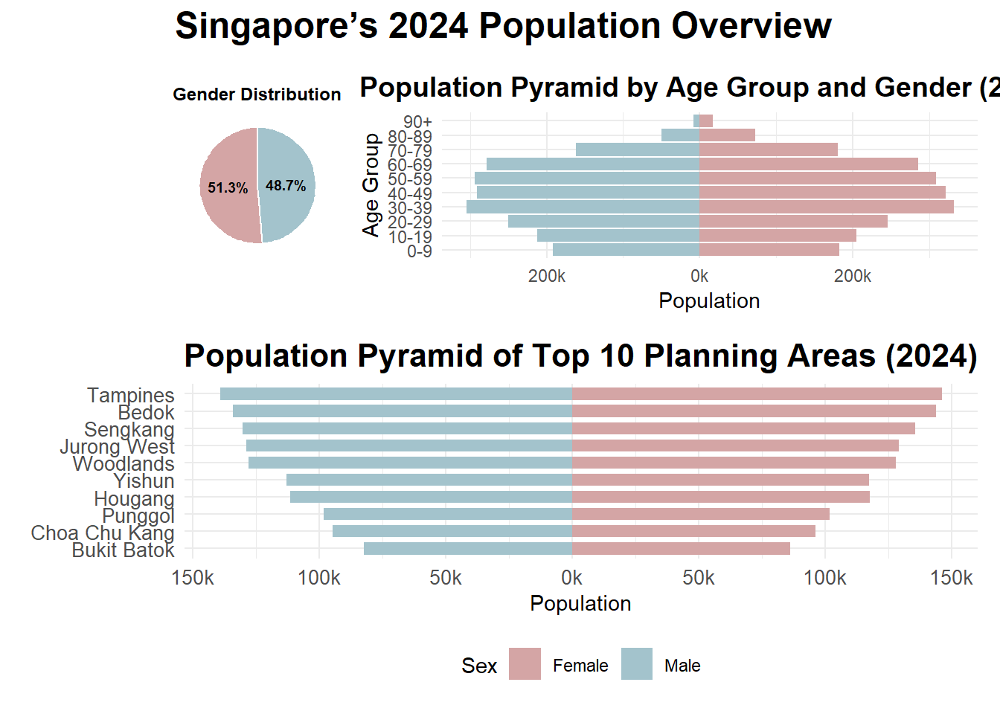
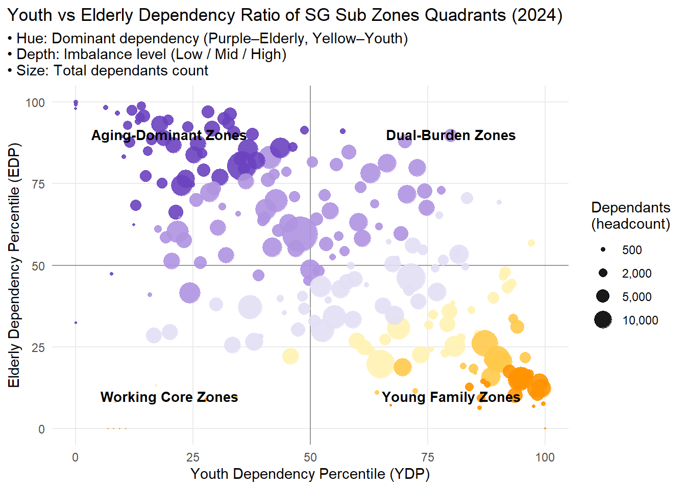
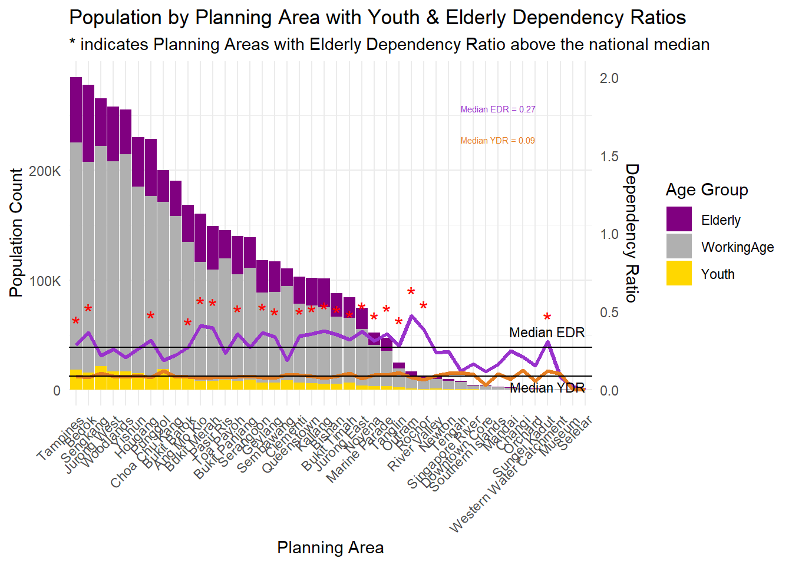

pacman::p_load(ggrepel, patchwork,
ggthemes, hrbrthemes,
tidyverse, ggiraph, plotly,
DT, readxl, gifski, gapminder,
gganimate, scales) Take-home_Ex01_Phase2
Take-home Exercise 1 - Phase 2
I‘d like to provide my personal thoughts to our friend Zhang Jinghan’s work.
Link: https://isss608-visualanalytics.netlify.app/take-home_ex/take-home_ex01/take-home_ex01
Getting start
Installing and loading the required libraries
Importing data
pop_data <- read.csv("data/respopagesex2024.csv")
sgresidence <- read.csv("data/respopagesex2024.csv")Good design principles
Here are the areas across all three visuals where she did very well and I should learn from:
- Her insights into the data were very profound, and she did a great job transforming the data to uncover more observations. For example, she derived the Youth Dependency Ratio (YDR) and the Elderly Dependency Ratio (EDR) to provide deeper insights into the issue of population aging. In comparison, my own assignment, which only compared population distributions, was not as insightful.
- She used colors very skillfully in her visualization—not just to make her work more visually appealing, but more importantly, to highlight contrasts between different groups. For example, she used red and blue to distinguish between male and female groups, and orange and purple to differentiate between younger and older age groups. These thoughtful color choices made her entire visualization much clearer and easier to understand.
- Her choice of visualization types was highly appropriate—for instance, using bar charts to represent population distribution and a scatter quadrant map to show the distribution of YDR and EDR across subzones. Personally, I couldn’t think of a better choice of charts to convey the data more effectively.
Further improvement
Following are my own ideas to adjust the visuals:
- In her Visualization 1, the Population Pyramid, she presented a comprehensive view of the population structure of Singapore residents in 2024, broken down by gender and age group. However, from a reader’s perspective, the visualization contains too much information in a single chart, which may require extra effort to understand the relationships among population size, gender, age group, and percentage of the total population. In another word, the visual is not very straightforward. If it were up to me, I would present these pieces of information separately for greater clarity.
For the code, I’d like to simply “borrow” the approach used by our friend Luo Yuming, who streamlined the amount of information in the chart and represented the gender ratio comparison using an additional pie chart.
# Standardise column names
pop_data <- pop_data %>%
rename(
Planning_Area = PA,
Subzone = SZ,
Age = Age,
Sex = Sex,
Population = Pop,
Year = Time
) %>%
filter(Year == 2024) %>%
mutate(
Age_numeric = ifelse(Age == "90_and_Over", 90, as.integer(Age)),
Sex = ifelse(Sex == "Males", "Male", "Female")
)Warning: There was 1 warning in `mutate()`.
ℹ In argument: `Age_numeric = ifelse(Age == "90_and_Over", 90,
as.integer(Age))`.
Caused by warning in `ifelse()`:
! NAs introduced by coercionage_distribution <- pop_data %>%
filter(Sex %in% c("Male", "Female")) %>%
group_by(Planning_Area, Age_numeric) %>%
summarise(Population = sum(Population), .groups = "drop") %>%
rename(Age = Age_numeric)
weighted_median <- function(df) {
df <- df[order(df$Age), ]
cum_pop <- cumsum(df$Population)
cutoff <- sum(df$Population) / 2
df$Age[which(cum_pop >= cutoff)[1]]
}
median_age_summary <- age_distribution %>%
group_by(Planning_Area) %>%
summarise(Median_Age = weighted_median(cur_data_all()))Warning: There was 1 warning in `summarise()`.
ℹ In argument: `Median_Age = weighted_median(cur_data_all())`.
ℹ In group 1: `Planning_Area = "Ang Mo Kio"`.
Caused by warning:
! `cur_data_all()` was deprecated in dplyr 1.1.0.
ℹ Please use `pick()` instead.gender_summary <- pop_data %>%
group_by(Sex) %>%
summarise(Population = sum(Population), .groups = "drop") %>%
mutate(Percent = Population / sum(Population),
Label = paste0(percent(Percent, accuracy = 0.1)))
p1 <- ggplot(gender_summary, aes(x = "", y = Population, fill = Sex)) +
geom_col(width = 1, color = "white") +
coord_polar(theta = "y") +
geom_text(aes(label = Label), position = position_stack(vjust = 0.5),
size = 2.5, fontface = "bold", color = "black") +
scale_fill_manual(values = c("Male" = "#a3c3cc", "Female" = "#d4a5a5")) +
labs(title = "Gender Distribution") +
theme_void() +
theme(
plot.margin = margin(10, 10, 10, 10),
legend.position = "none",
plot.title = element_text(size = 9, face = "bold", hjust = 0.5)
)
pyramid_data <- pop_data %>%
filter(Sex %in% c("Male", "Female")) %>%
mutate(AgeGroup = cut(Age_numeric,
breaks = c(seq(0, 90, 10), Inf),
right = FALSE,
labels = c("0-9", "10-19", "20-29", "30-39",
"40-49", "50-59", "60-69", "70-79",
"80-89", "90+"))) %>%
group_by(AgeGroup, Sex) %>%
summarise(Population = sum(Population), .groups = "drop") %>%
mutate(Population = ifelse(Sex == "Male", -Population, Population))
p2 <- ggplot(pyramid_data, aes(x = Population, y = AgeGroup, fill = Sex)) +
geom_col(width = 0.9) +
scale_x_continuous(labels = function(x) paste0(abs(x / 1000), "k")) +
scale_fill_manual(values = c("Male" = "#a3c3cc", "Female" = "#d4a5a5")) +
labs(
title = "Population Pyramid by Age Group and Gender (2024)",
x = "Population",
y = "Age Group"
) +
theme_minimal() +
theme(
plot.title = element_text(size = 14, face = "bold", hjust = 0.5),
legend.position = "none"
)
top10_pa_names <- pop_data %>%
group_by(Planning_Area) %>%
summarise(Total = sum(Population), .groups = "drop") %>%
arrange(desc(Total)) %>%
slice_head(n = 10) %>%
pull(Planning_Area)
top10_pyramid <- pop_data %>%
filter(Planning_Area %in% top10_pa_names, Sex %in% c("Male", "Female")) %>%
group_by(Planning_Area, Sex) %>%
summarise(Population = sum(Population), .groups = "drop") %>%
mutate(
Population = ifelse(Sex == "Male", -Population, Population),
Planning_Area = factor(Planning_Area, levels = rev(top10_pa_names))
)
p3 <-ggplot(top10_pyramid, aes(x = Population, y = Planning_Area, fill = Sex)) +
geom_col(width = 0.7) +
scale_x_continuous(labels = function(x) paste0(abs(x / 1000), name = "k")) +
scale_fill_manual(values = c("Male" = "#a3c3cc", "Female" = "#d4a5a5")) +
labs(
title = "Population Pyramid of Top 10 Planning Areas (2024)",
y = NULL
) +
theme_minimal() +
theme(
plot.title = element_text(face = "bold", size = 16, hjust = 0.5),
axis.text = element_text(size = 10),
legend.position = "bottom"
)
(p1 + p2) / p3 +
plot_layout(
widths = c(1, 2),
heights = c(1, 1.2)
) +
plot_annotation(
title = "Singapore’s 2024 Population Overview",
theme = theme(
plot.title = element_text(size = 18, face = "bold", hjust = 0.5)
)
)
- For visualization 2, I’d like to make a very simple adjustment which can directly hit the point, which is add a label to each zone on the chart. If required, we may also make this to an interactive chart.
My shot:
sgresidence <- sgresidence %>%
mutate(age = as.integer(Age))Warning: There was 1 warning in `mutate()`.
ℹ In argument: `age = as.integer(Age)`.
Caused by warning:
! NAs introduced by coercionsgresidence %>%
filter(is.na(as.integer(Age))) %>%
distinct(Age)Warning: There was 1 warning in `filter()`.
ℹ In argument: `is.na(as.integer(Age))`.
Caused by warning:
! NAs introduced by coercion Age
1 90_and_Oversgresidence %>%
filter(Age == "90_and_Over") %>%
summarise(total_90plus = sum(Pop)) %>%
mutate(total_pop = sum(sgresidence$Pop),
percent = total_90plus / total_pop * 100) total_90plus total_pop percent
1 25290 4193530 0.6030719sgresidence <- sgresidence %>%
mutate(
Age = ifelse(Age == "90_and_Over", "90", Age),
age = as.integer(Age)
)
sgresidence <- sgresidence %>%
filter(Pop > 0)
## 1 ────────── Calculate ratios
dep_sz <- sgresidence %>%
mutate(group = case_when(
age < 15 ~ "Youth",
age >= 65 ~ "Elderly",
TRUE ~ "Working")) %>%
group_by(SZ, group) %>%
summarise(Pop = sum(Pop), .groups = "drop") %>%
pivot_wider(names_from = group, values_from = Pop, values_fill = 0) %>%
mutate(
YDR = Youth / Working,
EDR = Elderly / Working,
Dependants = Youth + Elderly,
grp = if_else(YDR > EDR, "Y_dom", "O_dom"),
log_ratio = log(pmax(EDR, 1e-6) / pmax(YDR, 1e-6)), # avoid log(0)
YDR_pct = percent_rank(YDR) * 100,
EDR_pct = percent_rank(EDR) * 100
)
## 2 ────────── Discretize log_ratio into "Low" / "Mid" / "High"
dep_plot <- dep_sz %>%
mutate(
imbalance = cut(abs(log_ratio),
breaks = quantile(abs(log_ratio), probs = c(0, 1/3, 2/3, 1)),
labels = c("Low", "Mid", "High"),
include.lowest = TRUE))
## 3 ────────── Define stepped color table
col_tbl <- tribble(
~grp, ~imbalance, ~col,
"Y_dom", "Low", "#FFF2B2",
"Y_dom", "Mid", "#FFC94A",
"Y_dom", "High", "#FF9300",
"O_dom", "Low", "#E3DFF5",
"O_dom", "Mid", "#AF94E1",
"O_dom", "High", "#6B42BF"
)
## 4 ────────── Merge color
dep_plot <- dep_plot %>%
left_join(col_tbl, by = c("grp", "imbalance"))
## 5 ────────── Plot
ggplot(dep_plot, aes(YDR_pct, EDR_pct)) +
geom_hline(yintercept = 50, color = "gray60") +
geom_vline(xintercept = 50, color = "gray60") +
geom_point(aes(size = Dependants, color = col), alpha = 0.9) +
scale_colour_identity() +
scale_size_area(max_size = 12,
breaks = c(500, 2000, 5000, 10000),
labels = scales::comma,
name = "Dependants\n(headcount)") +
labs(
title = "Youth vs Elderly Dependency Ratio of SG Sub Zones Quadrants (2024)",
subtitle = "• Hue: Dominant dependency (Purple–Elderly, Yellow–Youth) \n• Depth: Imbalance level (Low / Mid / High) \n• Size: Total dependants count",
x = "Youth Dependency Percentile (YDP)",
y = "Elderly Dependency Percentile (EDP)"
) +
annotate("text", x = 80, y = 90, label = "Dual-Burden Zones", fontface = "bold", size = 3.5, hjust = 0.5) +
annotate("text", x = 80, y = 10, label = "Young Family Zones", fontface = "bold", size = 3.5, hjust = 0.5) +
annotate("text", x = 20, y = 90, label = "Aging-Dominant Zones", fontface = "bold", size = 3.5, hjust = 0.5) +
annotate("text", x = 20, y = 10, label = "Working Core Zones", fontface = "bold", size = 3.5, hjust = 0.5) +
theme_minimal(base_size = 11) +
theme(
panel.grid.minor = element_blank(),
plot.title.position = "plot"
)
- For Visualization 3, I noticed that a): Median lines for both the EDR and YDR are presented, they are not labeled, which may cause confusion. I would recommend adding clear labels to these reference lines. b): It would be helpful to highlight planning areas where EDR exceed the median values, as these zones may warrant closer attention. c): It’s good to show the median EDR and YDR in value so that readers can understand the situation more clearly.
My shot:
# 1. Categorize by Age Group and summarize population
df_agegroup <- sgresidence %>%
mutate(AgeGroup = case_when(
Age < 15 ~ "Youth",
Age <= 64 ~ "WorkingAge",
TRUE ~ "Elderly"
)) %>%
group_by(PA, AgeGroup) %>%
summarise(Pop = sum(Pop), .groups = "drop") %>%
pivot_wider(names_from = AgeGroup, values_from = Pop, values_fill = 0) %>%
mutate(
TotalPop = Youth + WorkingAge + Elderly,
ElderlyRatio = Elderly / WorkingAge,
YouthRatio = Youth / WorkingAge
)
# 2. Reshape to long format for stacked bar chart
df_age_long <- df_agegroup %>%
pivot_longer(cols = c("Youth", "WorkingAge", "Elderly"),
names_to = "AgeGroup", values_to = "Pop") %>%
mutate(PA = fct_reorder(PA, -Pop, .fun = sum))
# 3. Compute median values and max population
median_edr <- median(df_agegroup$ElderlyRatio, na.rm = TRUE)
median_ydr <- median(df_agegroup$YouthRatio, na.rm = TRUE)
max_pop <- max(df_agegroup$TotalPop, na.rm = TRUE)
# 4. Add star marker to EDR above median
df_agegroup <- df_agegroup %>%
mutate(EDR_star = if_else(ElderlyRatio > median_edr, "*", ""))
# 5. Define color palette
custom_colors <- c(
"Youth" = "#FFD700", # Gold
"WorkingAge" = "#B0B0B0", # Gray
"Elderly" = "#800080" # Purple
)
# 6. Get rightmost x position
last_x <- length(unique(df_age_long$PA))
# 7. Create the plot
ggplot(df_age_long, aes(x = PA, y = Pop, fill = AgeGroup)) +
geom_bar(stat = "identity", width = 0.95) +
# Elderly Dependency Ratio line
geom_line(
data = df_agegroup,
aes(x = PA, y = ElderlyRatio * max_pop / 2, group = 1),
inherit.aes = FALSE, color = "#9932CC", size = 1.2
) +
# Youth Dependency Ratio line
geom_line(
data = df_agegroup,
aes(x = PA, y = YouthRatio * max_pop / 2, group = 1),
inherit.aes = FALSE, color = "#E67E22", size = 1.2
) +
# Red stars for high EDR
geom_text(
data = df_agegroup %>% filter(EDR_star == "*"),
aes(x = PA, y = ElderlyRatio * max_pop / 2, label = EDR_star),
inherit.aes = FALSE, color = "red", size = 5, vjust = -0.8
) +
# Median lines
geom_hline(yintercept = median_edr * max_pop / 2,
color = "black", linetype = "solid", size = 0.5) +
geom_hline(yintercept = median_ydr * max_pop / 2,
color = "black", linetype = "solid", size = 0.5) +
# Median line labels (right)
annotate("text", x = last_x, y = median_edr * max_pop / 2,
label = "Median EDR", vjust = -1, hjust = 1, size = 3, color = "black") +
annotate("text", x = last_x, y = median_ydr * max_pop / 2,
label = "Median YDR", vjust = 1.5, hjust = 1, size = 3, color = "black") +
# ➕ EDR/YDR values in red box area
annotate("text", x = last_x - 10, y = max_pop * 0.9,
label = paste0("Median EDR = ", round(median_edr, 2)),
hjust = 0, size = 2, color = "#9932CC") +
annotate("text", x = last_x - 10, y = max_pop * 0.8,
label = paste0("Median YDR = ", round(median_ydr, 2)),
hjust = 0, size = 2, color = "#E67E22") +
# Final touches
scale_fill_manual(values = custom_colors) +
scale_y_continuous(
name = "Population Count",
sec.axis = sec_axis(~ . * 2 / max_pop, name = "Dependency Ratio"),
labels = label_number(scale_cut = cut_short_scale())
) +
labs(
title = "Population by Planning Area with Youth & Elderly Dependency Ratios",
subtitle = "* indicates Planning Areas with Elderly Dependency Ratio above the national median",
x = "Planning Area",
fill = "Age Group"
) +
theme_minimal() +
theme(
axis.text.x = element_text(angle = 45, hjust = 1),
legend.position = "right"
)Warning: Using `size` aesthetic for lines was deprecated in ggplot2 3.4.0.
ℹ Please use `linewidth` instead.